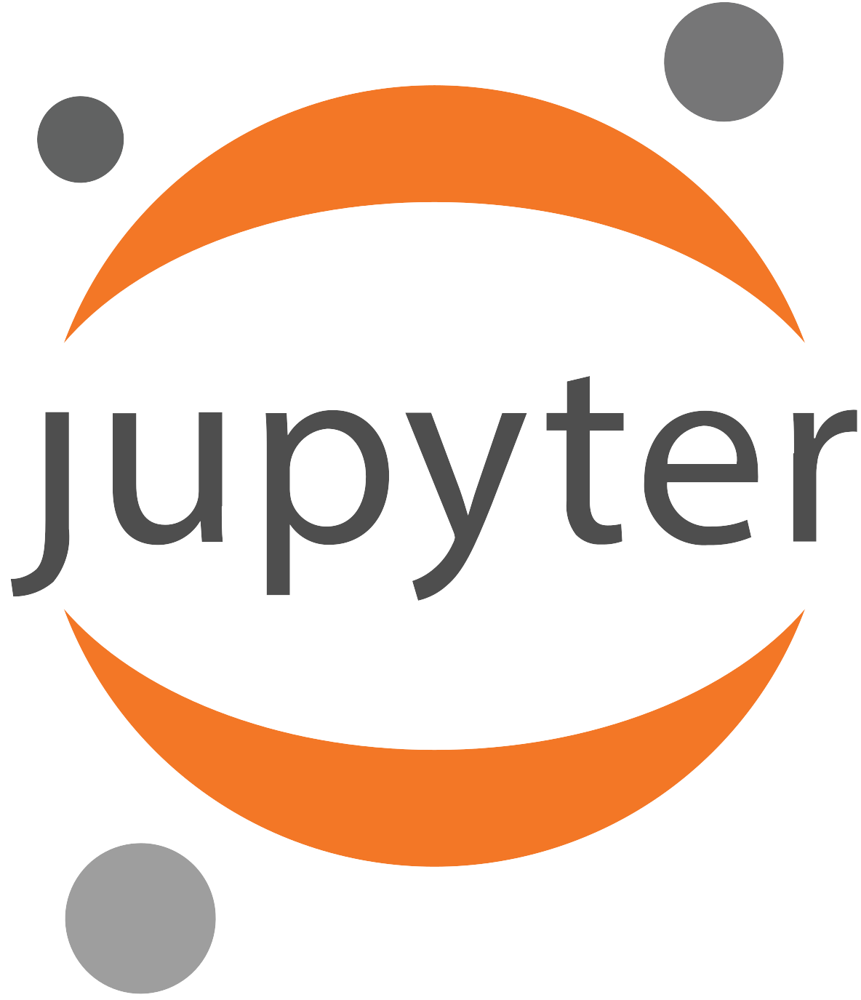
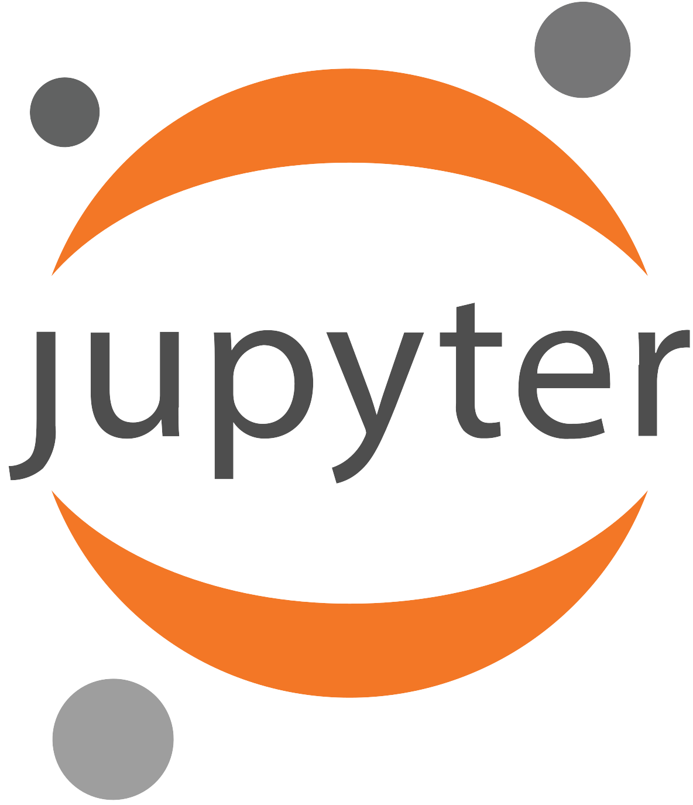

Lee Language Lab
Since April 2024, I have been working at Lee Language Lab (L³), a research lab at Ontario Tech University and the University of Toronto, led by Dr. Annie En-Shiun Lee. The lab focuses on language diversity and multilingualism in language technology, aiming to make the technology more inclusive and accessible. Notable publications from the lab include ProxyLM, a framework for predicting the performance of models such as M2M100 and NLLB in multilingual settings; AfriInstruct, which explores instruction-tuning for multiple African languages across various tasks; and URIEL+, a knowledge base of language features for natural language processing tasks and linguistics, which I led the development of. Learn more about Lee Language Lab here.
URIEL+
I am the team lead of the Language Distance team at L³. My work began with assisting in and proofreading the camera-ready version of the workshop paper, A Reproducibility Study on Quantifying Language Similarity: The Impact of Missing Values in the URIEL Knowledge Base, for NAACL 2024. This paper aimed to reproduce the language distances in URIEL, a knowledge base that represents languages as geographical, phylogenetic, and typological vectors. In addition, URIEL contains pre-computed numerical distances between these language vectors, indicating how similar (0 for identical) or different (1 for furthest apart) two languages are. These distances are retrieved using lang2vec, a Python query tool for the URIEL knowledge base.

The authors of the reproducibility study became interested in URIEL after publishing another paper, Predicting Machine Translation Performance on Low-Resource Languages: The Role of Domain Similarity. For that study, they used URIEL and lang2vec to retrieve language distances between South Asian languages as predictors for machine translation performance. However, they found that the distances between these languages were nearly identical, which reduced the effectiveness of the distance values as predictors. Upon further investigation, the team discovered that low-resource languages, including many South Asian languages, had sparse data in URIEL, prompting a deeper dive into the knowledge base.
In their reproducibility study, they found that nearly a third (31.24%) of the languages in URIEL that supported language distances had no typological linguistic feature information. In addition, they discovered that missing values in feature vectors were likely replaced with defaults: a value of 1 if all values were missing, and a 0 if only some values were missing. However, there was no explanation for these replacement decisions in the URIEL paper, URIEL documentation, or the lang2vec library documentation. Furthermore, the study revealed conflicting documentation regarding how the distances were computed, with the URIEL documentation referencing modified angular distance, while the lang2vec documentation referred to cosine distance.
This brings us to L³’s next initiative: improving the URIEL knowledge base by addressing the issues identified in the reproducibility study, which I led. To tackle the low typological feature coverage, particularly for low-resource languages, data from five new or updated linguistic resources—SAPhon, BDPROTO, Grambank, APiCS, and eWAVE—was integrated into URIEL+. URIEL+ now includes 361 additional languages compared to URIEL and expands typological feature coverage for 2,898 languages.

The ambiguity in handling missing values and inconsistent documentation was resolved with several user-focused enhancements. We implemented a robust distance calculation system that:
- Disallows calculations when two languages do not have enough data.
- Allows users to choose the distance metric (angular or cosine).
- Enables customized distance calculations using arbitrary subsets of features.
To support distance calculations for languages without data, we introduced advanced imputation algorithms, including k-nearest neighbor imputation, MIDASpy imputation, and softImpute imputation. In addition, we incorporated confidence scores for distances, which account for factors in the language vectors such as data completeness, data agreement, and imputation quality.
We validated URIEL+ through three key evaluations:
- Imputation Quality Test: Metrics such as accuracy and F1-score were used to assess the provided imputation algorithms, all of which achieved over 84% accuracy, outperforming baseline mean imputation.
- Performance in Natural Language Processing Tasks: We tested URIEL+ vectors and distances in natural language processing tasks previously reliant on URIEL, including ProxyLM (performance prediction using URIEL distances), LangRank (ranking transfer languages), and LinguAlchemy (enhancing multilingual model performance using syntactic and geographic vectors). URIEL+ improved task performance by up to 50%.
- Alignment with the Gower Coefficient: URIEL+ showed positive correlation with the Gower coefficient, a linguistic distance measure, whereas URIEL showed negative correlation.

We released URIEL+ as an open-source knowledge base on GitHub and as a Python library. In addition, we presented our work in a paper, URIEL+: Enhancing Linguistic Inclusion and Usability in a Typological and Multilingual Knowledge Base, accepted at the International Conference on Computational Linguistics (COLING 2025).
CSCI 4055U - Natural Language Processing
Around the same time I was leading the development of URIEL+, I collaborated with a small team to develop the natural language processing (NLP) curriculum and assignments for the undergraduate and graduate computer science course CSCI 4055U - Natural Language Processing at Ontario Tech University. The course assignments focus on multilinguality and leveraging personal experiences, reflecting the diversity of the local community in Oshawa, where Ontario Tech is located. Oshawa has a high proportion of first-generation immigrants, and in 2023, every graduate student at the university spoke a second, non-official language. Therefore, this focus empowers the university’s diverse population.

The course features three assignments:
- Assignment 1: A Journey through Language Modelling - Introduces language modeling for low-resource languages.
- Assignment 2: Neural Machine Translation with Custom Vocabulary Building & Transformer - Covers neural machine translation (NMT) through custom vocabulary and transformer implementation.
- Assignment 3: Adapting Languages with Fine-Tuning - Focuses on adapting models for low-resource languages.
The course is described in more detail in the paper, Empowering the Future with Multilinguality and Language Diversity, which was accepted at the Association for Computational Linguistics (ACL 2024) conference and received the Audience Award.
URIEL++
I am currently leading enhancements to URIEL+, including the integration of writing systems as a new feature type. These features capture details such as whether a language uses an alphabet, is written left-to-right, or includes spaces between words.
We are developing a user-friendly interface for URIEL+ that allows researchers to access the data most relevant to their needs without requiring them to clone a repository or download a library. In addition, we are exploring the feature set of URIEL+ to optimize it by trimming redundant features, reducing the runtime of imputation algorithms.
These enhancements have already increased typological feature coverage by up to 150% compared to URIEL. Stay tuned for updates on this exciting initiative!